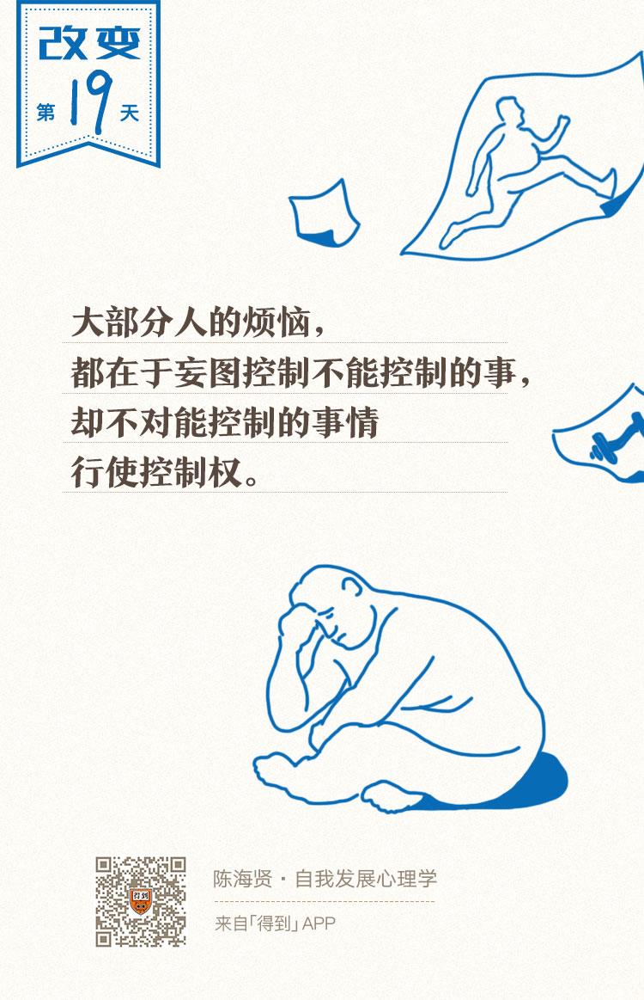

19丨控制两分法：如何找到烦恼的根源？

欢迎来到《自我发展心理学》。
你好，我是陈海贤。
有一次我去学校做讲座，有个同学跟我说：
“我有一个远大目标，希望能像我的老师那样成为科学家。可是，当科学家需要先考GRE，要去国外读博士。读博士还要读很多文献，发很难的paper。回来还要能组建自己的实验室。这其中任何一个环节稍有差错，我的目标就功亏一篑了。一想到这些，我就很焦虑。就觉得眼前的事很没意义，于是什么也不想做了。”
看起来他有远大的目标，这个目标似乎也提供了足够的张力，可是这个目标的容错率非常低。就像是一架仪器，看起来设计精密，其实却很容易坏。更大的问题是，这个目标并没有和他当前的计划相联系。这让这个同学变得非常心浮气躁。
那么，我们如何能把目标转化为行动的动力呢？
上节课，我们讲到了一种能把张力变成动力的思维工具——WOOP思维。这节课，我们来讲另一种增加动力的思维方式，我把它叫做控制的两分法。
控制的两分法：两个步骤
不知道你有没有听过一句祈祷词，叫做“上帝啊，请赐予我勇气，让我改变能够改变的事情；请赐予我胸怀，让我接纳不能改变的事情；请赐予我智慧，让我分辨这两者。”
我们把这句祈祷词精简一下，就是我们今天讲的控制的两分法：努力控制你能控制的事情，而不要妄图控制你无法控制的事情。
这两句话，前者讲的就是专注精进，后者讲的就是顺其自然。只有把这两句话同时结合起来，才能既保持积极上进，又能让自己内心平静。
为什么这么说呢？
作为一个心理咨询师，我发现大部分人的烦恼，都在于妄图控制我们不能控制的事情，却不对我们能够控制的事情行使控制权。
想想我们的烦恼有多少来源于我们控制不了的东西。
我们控制不了我们的过去、我们的环境，控制不了我们的原生家庭。如果你的父母不符合你的期待，你再怎么样愤怒，他们还是不符合你的期待。
我们控制不了别人对我们的评价，控制不了别人是怎么想、怎么做的，更控制不了别人是否会喜欢我们。
我们还控制不了一个基本的事实：所有的人都会死，而我们还不知道我们什么时候会死。
只要我们不承认某些东西是我们控制不了的，我们脑子里就一直会有一个“它应该要这样”的图景，某种意义上，应该思维就是对我们控制不了的事情的执着。
什么是我们能控制的部分？
如果你想锻炼身体，你可以控制自己早上是否早起、晚上是否去散步，你可以控制自己的饮食。如果不能控制每天都这么做，你至少可以控制一天。
还有一个最重要的东西你是能控制的：你控制不了发生在你身上的事情，但是你能控制自己怎么想。
可是我们并不愿意控制这些，因为在我们眼里，这些事情好像太小了，它又不能马上改变结局，所以我们宁可由着性子去想那些能控制的事情。
控制两分法的第一步，是思考你所担心的事情里，有哪些是你能控制的，哪些是你控制不了的，并把注意力专注到你能控制的部分。
认识到很多事情是你控制不了的，这是一种心智上的成熟。
精神分析里有一个词叫“全能自恋”，说的是婴儿觉得自己是无所不能的“我只要一动念，母亲就会来喂奶，我只要一哭，就有人来安抚。”
随着心智的发展，我们逐渐认识到，这个世界不是围绕我们的想法运行的。只有认识到我们没法控制很多事情，我们才能把注意力集中到我们能控制的事情上去。
也许你要问：有些事既有我能控制的部分，又有我不能控制的部分，那该怎么办呢？
比如我给同事留个好印象，同事怎么想我，当然是我不能控制的，可是我也可以勤快一些，多帮一些忙，给他们留下好印象的机会似乎也会大一些。这样想是有道理的。
实际上，很少有事情是绝对不能控制的，或者是绝对能够控制的，很多事情是混杂在一起的，既有我们能控制的部分，又有我们不能控制的部分。
那该怎么办呢？
控制两分法的第二步，对于不能够完全控制的事情，把你能控制的部分找出来，并做成计划。
我曾遇到过一个博士生。博士毕业是有要求的，需要发一篇SCI文章才能毕业。他很焦虑，来向我咨询。我们就谈到怎么制定目标和计划。
他说：“老师，你说的看起来有道理，但发表文章不是我能决定的。我既不知道实验数据是否理想，也不知道老板是否有空帮我改，更不知道编辑会持何种态度，我做计划有什么用呢？”
他说的是实情。这种不确定、不可控的感觉是一种很糟糕的感觉。很多人就是因为想到“我什么也控制不了”，才会变得很拖延。
可是你仔细思考就会发现，这个不可控的事情背后，都有它可控的成分在。比如：
- 你不知道这次实验的数据是否理想，但你知道多做几次实验，更可能获得理想数据；
- 你不知道什么时候会有灵感，但你知道多读几篇文献，会有更大的机会获得研究灵感；
- 你也不知道老板是否有时间帮你修改文章，但你知道多催他几次，他更可能给你反馈。
后面的这个部分，就是你能做的工作。
所以，如果我们能够把这些事情背后可控的部分找出来，并把它们做成计划，那我们就不会陷入到焦虑当中，因为我们一直都是有事可做的。
听我说到这里，这个博士生点了点头，看起来他认同了，但他紧接着问：“可是老师，按时毕业对我来说真的很重要啊，我连工作都找好了，万一毕不了业，可怎么办啊！”
他焦急地看着我，似乎就等着我给他一个保证，保证他这么做，就一定能够毕业了。
这是一个很有趣的现象。在我的实践中，大部分人都能够用这种控制的两分法来控制焦虑。可是也有一些人做不到，因为他们的思维被另一个问题带走了：这件事重要不重要？
这是人自然分配注意力的原则，大部分人只会注意到这件事重要不重要，而不会去想在这件事里，我能控制的是什么。
可是如果我们用理性想一想：这件事是很重要，那又怎么样呢？是因为这件事很重要，所以你就应该能够控制它，还是因为这件事很重要，所以你就应该担心呢？
如果是因为这件事很重要，所以你就期待自己应该能够控制它，这就是一种应该思维了，这里面有我们天真的幻想在。
如果是因为这件事很重要，我就应该担心，这有一定的道理，可是如果你任由自己担心，那你也就放弃了控制自己能够控制的事情。
你明明能够通过控制的两分法来让自己变得专注一些，却一定要任由自己焦虑，让你的焦虑破坏了你的行动力，这也是不合理的。
好在这个博士最后还是想明白了这个问题，回去努力工作了。不知道你是否想明白了呢？
总结一下，今天我们讲了控制的两分法。
第一步，遇到一件事的时候，先想想这件事是不是你能够控制的。
第二步，如果不是完全能够控制的，就想想自己能够控制的部分在哪里，把这部分找出来，并做成计划。
这会让我们意识到，哪怕我们没法决定很多事，但我们仍然有很多事可做。
这样做有什么好处呢？
它能够让你把注意力集中到现在能做的事情上，让你沉下心来，踏踏实实地工作。至于结果是“天道酬勤”还是“事与愿违”，那不是你能控制的了。
好在那时候，无论结果如何，你都可以跟自己说“我已经尽力了，所以问心无愧。”
如果仔细思考，你会发现，我们前面所讲的僵固型思维、应该思维和绝对化思维，它们的问题也在于没有好好区分哪些地方是我们能够控制的。
比如，僵固型思维，就把注意力放到了我们不能控制的，别人评价我们“聪明不聪明”上，而没有放到我们能够控制的“努力不努力”上。
应该思维，则是试图用头脑中已有的规则去控制世界、自己和他人，发现控制不了，就会变得很焦虑、沮丧甚至怨恨。
绝对化思维，则先是用绝对化的要求，把自己的控制范围无限扩大，又因为受到挫折而放弃了自己能够控制的事情。
请注意，控制我们能够控制的事情，是专注和精进，而不妄想控制我们控制不了的事情，是为变化留下空间。这也是有弹性的思维的特征。
我们下一讲见。
